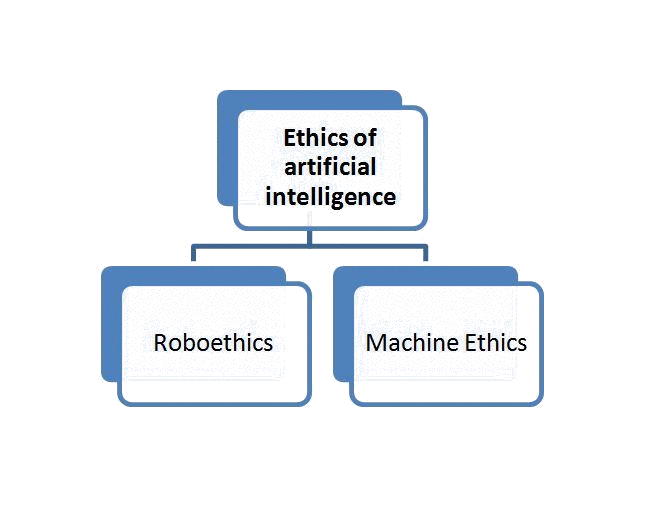
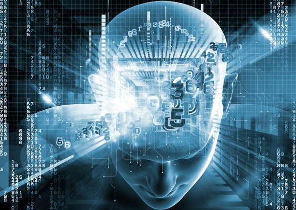

Robots, intended as autonomous electro-mechanical machines, have been theorized and studied for over a century. Today, thanks to the advancements in technology, robots are becoming a reality. We have the hardware, but we are still lacking with the software. Unmanned aerial vehicles (drones) used by the military still require a human operator to make ethical decisions.
To address these concerns, new fields of research have been formed:

Roboethics refer to the morality of how humans design, construct, use and treat robots and other artificially intelligent beings. The first symposium on this matter was held in 2004. Machine Ethics refer to the moral behavior of artificially intelligent beings.
Most researchers agree on the fact that robots cannot have a conscience. They main question of today is: can robots be programmed to make ethical decisions? Are ethics even computable? Absolute rules are definitely computable, but we humans never deal in absolutes when making a decision. As our legal system proves, there are a lot of grey areas, exceptions and contradictions that play a role when making a decision in a court of law.
In 2011, the Engineering and Physical Sciences Research Council (EPRSC) and the Arts and Humanities Research Council (AHRC) of Great Britain jointly published a set of five ethical principles for designers, builders and users of robots:
The research in Robot morality is considered a top priority by prominent figures of the techno-logical world, fearing the creation of the singularity, a sentient being capable of recursive self-improving. Some of them consider the AI more dangerous than nuclear weapons.
